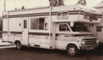
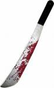
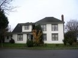
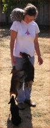

Attack of the Evil Appendage- Part II
Just weeks after coming out of the hospital with diabetic complications from a foot injury, Dennis has had to go back in with another problem - this time with his arm! Luckily the wound was less severe and his stay was short-lived. "Dad's arm is healing and down to normal size now," reports Diana. "He is a hero to come through it all and still get up to go to work at five every morning!"
Lonesome Polecat "Weston sleeps with the phone so he can talk to his doll all night," says an exasperated Diana. "Dallas can't stand it and has to sleep on the couch to get some peace. Now Weston has moved up into the loft so Ammon, who has moved in, and Dallas have relief at night! Weston is still catching a date now and then with his girl, even though he's not 16 yet. He is super-sneaky and his girl's mother helps him! Poor Weston is cursed with the worst crush that I have EVER seen! It's like when our children have found the right one and have had to be together constantly. UGH!"
"Weston sleeps with the phone so he can talk to his doll all night," says an exasperated Diana. "Dallas can't stand it and has to sleep on the couch to get some peace. Now Weston has moved up into the loft so Ammon, who has moved in, and Dallas have relief at night! Weston is still catching a date now and then with his girl, even though he's not 16 yet. He is super-sneaky and his girl's mother helps him! Poor Weston is cursed with the worst crush that I have EVER seen! It's like when our children have found the right one and have had to be together constantly. UGH!"
Cluffers Move
The Cluffs are on the move again. "Maybe we have gypsy blood or something," says Karen, "because we can't stay in one place for very long, much to Dane's dismay, but we are very happy to be returning to Ashland where we feel like we are home. We had the missionaries over last night and they said Ashland is full of wierd-o's. But then said we should fit right in there...humm. Dane is going to be working with Chuck Troutman in his jewelry shop downtown and we will be living up the hill on their property for a while until our Coquille house is sold. Dane will be finishing up business here in Coquille and moving down to Ashland at the end of October and the rest of the family will follow around Christmastime when the term is over for Ammon and Braden. Kaylynn is already down there living with the Shumway family. Everyone is doing great, very happy to be going back home!"
Dakota In Detention
Dakota has been given a detention at his strict English all-boys school for having his shirt half un-tucked! He had to miss his lunch hour and was forced to write out the entire school dress code 10 times. Let this be a lesson to all American kids who think their school is strict!
Up All Night
"I'm up in the night more with wild teenagers than I was with infants," reports a weary Diana.
Kira: Famous Artist
It was a triple win for Kira in the annual Reflections art contest at school with the theme “I Can Make a Difference By…” Her photography entry titled, “Finding Beauty in Nature”, and two video entries titled, “Recycling” and “Eating Healthy Foods” won at the school level. (See the photos) She advanced on to district for further judging. This is the third time that Kira has entered this contest, and also the third time that she has taken home first prize (if not second and third too)! She has also gone on to state level twice. Amazing results Kira, well done!
Nial's New Room
Props to Nial who has bravely gone where no one has before by deciding to live in the barn! Despite Nial's advanced camping skills, odds are that if he still hasn't contracted rabies within a week, he'll already be in the advanced stages of lockjaw. Good luck Nigel!
Tabby Starts School
"Tabitha started pre-school this Fall," says, Daisha, mother of the 2½ year old. "They start them early in the UK because proper school starts at age four. I was dreading her first day because she's a big-time mama's girl and also quite shy but mostly because Dakota had such a hard time settling in when he was little. However, my fears were quickly put to rest as Tabitha ran straight in without so much as a goodbye kiss! And then when it was time to come home she cried! I have to admit I was a bit offended that she made the transition from mom to school so easily! But she's super happy to be with other kids and loves to learn - so I guess I'll forgive her."
Slippery Fish Boy
Melanie recently went to the local elementary school to take photos for the yearbook with Joseph in tow. After shooting for about a half an hour she looked up and Joseph was gone. "I looked in classrooms and down halls," remembers Mel, "and was getting worried when suddenly over the intercom I got paged to the office. And there he was! They must think I am such a completely useless mother. Whenever Joseph goes into the office he always tries to catch a fish from their fish tank, and now they've taped the fish tank shut! I will have to use the leash next time."
Neverending Story
She's is at it again! Diana's been organizing and cleaning the barn for the past few weeks, this time concentrating on the woodshop. "I'm cleaning it out so Dad can build coffins in there on his spare time," says Diana nonchalantly!!
Ladies Man
Ammon's dating days are numbered and he knows it. This Spring he will be going away on a two year chick-drought (aka a mission) and is frantically trying to redress any future imbalances by getting as much lady-action as possible now - even if it means dating multiple women at once. "It's like he's a little squirrel rushing around and storing up nuts for a long hard winter ahead," says an anonymous source.
Dallas's Career Path
Apparently Dallas has revealed that he loves to work with harsh deadlines, in insanely tense and dangerous situations. So cleaning out the Cluff's barn has trained him well!
Mel's Booming Business! With a little bit of encour-agement Melanie got her business license and is busier than ever this fall taking photos. Besides family photos, Melanie photographed a Pre-School, a southern church’s fall social and a wedding. Of all the photos taken, Melanie’s favourites are of her own family.
With a little bit of encour-agement Melanie got her business license and is busier than ever this fall taking photos. Besides family photos, Melanie photographed a Pre-School, a southern church’s fall social and a wedding. Of all the photos taken, Melanie’s favourites are of her own family.
Steve on TV Again!
Steve's career as a movie-star is beginning to hot up. Stack magazine/Stack TV attended and filmed two interview segments; one with Amare (click here) and one with Steve (click here)
Clean Out Catastrophe
"You know how you all say you will take a match to our home when I die," begins Diana morbidly, "well Shira took a match to the contents of my personal roll-top desk and I'm still not even dead! It took 6 hours to burn it all up. Goodbye history, genealogy, goals, reports, trip memorabilia and more. I was mad! The only good thing is that the desk isn't so loaded now, though it is now filled with Shira things!"
Soren
Soren competed in another Academic Bowl and his team won second, advancing them to state. Congrats smartypants!
Fabulous Baker Boys
"Weston took a loaf of his homemade bread to his Foods teachers," reports Diana, "and when I went to the open house both Foods teachers couldn't say enough about his fabulous bread! They also mentioned how Dallas always helped so much to keep all the kids on track with working in the kitchen, with the laundry and everything they need. The teachers love Dallas and say they can't do without his help each day."
Cluff's Coastal Invitation
"We have taken to going to the beach on the weekends," begins Karen, "and having a bonfire and hot dog roast together with Tiana and Hyrum's family. It is fun to be at the beach at night and watch the sun set over the water. Dane and the kids get to body surf and skim board. Anyone is welcome to join us! We would love company!"
 Got a problem or a question? The Cluff Family Times' lifestyle guru can solve all of your personal, romantic, financial, spiritual, decorating and fashion dilemmas. The answers are only a click away. Do you have a question for our agony aunt? Send it to: submissions@tuffcluff.com Got a problem or a question? The Cluff Family Times' lifestyle guru can solve all of your personal, romantic, financial, spiritual, decorating and fashion dilemmas. The answers are only a click away. Do you have a question for our agony aunt? Send it to: submissions@tuffcluff.com
WIN WIN WIN!
 Ummm, we did say that we'd have your wildest traveling disaster stories ready for this issue but there wasn't enough room, again! So maybe everyone should try hard not to have any newsworthy stuff happen to them this winter and we can get it into the next issue! In the mean time you can still send your horror stories in to us here at Tuffcluff and the best/worst one will win the DVD of their choice!
Ummm, we did say that we'd have your wildest traveling disaster stories ready for this issue but there wasn't enough room, again! So maybe everyone should try hard not to have any newsworthy stuff happen to them this winter and we can get it into the next issue! In the mean time you can still send your horror stories in to us here at Tuffcluff and the best/worst one will win the DVD of their choice!
Get-Togethers
We'd like to plan a fun family reunion on the high seas with a big Tuffcluff family cruise in 2009 (for Dad's 70th birthday) or 2010 (more time to plan/save). The destination shortlist includes Alaska and Mexico but we're still open to all suggestions. What we need to know now is how feasible this is for everyone and which cruise/date you would prefer. Please let us know what you think ASAP. And just in case you are still unaware, the annual family reunion for the Dennis and Diana Cluff family takes place each year in Ashland on and around the Fourth of July. So get yourself to the party!
Have Your Say
Don't agree with something we've said? Want to write an editorial? Have something to report? Want to see your article in print? It's easy! Just send your submissions and pictures via email to: info@tuffcluff.com
Next Issue
The Winter 2007/08 edition of The Cluff Family Times will probably be a bit late because we only got the Fall issue up so hopefully you're not holding your breath!
|
|
Motorhome Breakdown #794!
“Tiana and Hyrum needed to borrow one of our motorhomes," says Diana, "so I jumped into the small one at about seven p.m. and took off for the coast. I got about a half a mile from home and decided to top off the gas when I discovered I'd forgotten the gas keys (oh well, Cluffs never go on a trip without turning back home within the first mile!) All gassed up, I drove along listening to scripture tapes to keep awake. When darkness came I was off the freeway and onto the hour long road though the mountains to Coquille. I drove for about 45 minutes when the motorhome acted as if it was out of gas. I switched the gas tank but the motorhome just died. I got it started again and began up a hill but it died again. At ten p.m., in pitch dark, I had to back down the hill because there was no place to pull over. Lots of big trucks were rolling by and I was worried I would be hit any minute. I put on my clinkers and tried to control the powerless motorhome as I backed down to the end of the guardrail straight towards a huge drop off! I had be sure to back up just perfect to keep from going off the cliff. I started to think about how I had always laughed when we broke down in our cars, vans and motorhomes when Dad was driving. Now I was not laughing - just as Dad never was! This was the second time I had to back up a motorhome on a hill without power brakes or steering. Try it sometime to see what real stress is. When I got safely down without a truck smashing me or going over the cliff, I realized that I hadn't brought the cell phone, but I noticed that I was close to a house - I was in luck!Maybe I could use their phone to call for help. I walked towards the house but the closer I got the more it looked like a haunted house! The yard was all junky, the porch was sunken in, there were rags at the windows and only a dim light in the top story. I decided that I didn't need a phone that bad so I went back to the motorhome and went to bed armed with the machete that I always keep for emergencies. If anyone bothered me, my plan was to hold up my machete and say, "may I help you?" I also prayed for protection as the boys had broken the lock on my big window by jumping in and out of it. All night big trucks and wild, speeding teenagers rocked my motor home as they sped past. I couldn't sleep. When the first morning light finally came I decided to lift the hood and try to fix the motor myself. I tried everything I could think of for hours. At one point I overfilled the radiator jar and had to dip it out with a teaspoon. I kept trying to start the motorhome, without success. Finally, I decided to try the spook-house. It looked worse in the day than at night. I knocked, but nothing. I had my motorhome hood up and now it was about eleven in the morning. Many cars and trucks had passed, but no one had stopped. I was either going to have to walk or pray for help. I guessed I was about 20 miles or so from Myrtle Point but I was in flip flops and didn't know if they would hold together for the big walk. I began to think that I might have to spend the night in the woods if I couldn't make it to a town by dark. Finally, I decided to pray. I told Heavenly Father that I needed either the motorhome to run or someone to help me. Then I tried to turned on the motorhome and it started right up! Next I saw a young man in camouflage clothes drive out of the spook-house in a nice new truck. I ran across the road and asked him how far it was to Myrtle Point. He said three miles and offered me a ride but I didn't want to be alone with him, so he helped me with the motorhome by hitting the gas to blow out the fuel lines. Then he said he would follow me into town and told me where to find a repair shop. I waved a thank you to him as we hit Myrtle Point. The motor home was doing great, so I drove on to Coquille. When Tiana and Hyrum took the motorhome they found that it still had the same problems. They spent one day getting a new battery, filters, fuel pump, wiring etc. But at least when I needed help my prayer was answered with the two things I had asked for. I am so thankful my parents taught me how to pray, it has saved me countless times and is one of the greatest gifts I received from them. I don't see how people live in this world without using prayer daily for their thanks and needs. It is the tool that works when everything else fails."
World War II Interview
By Tuffcluff Correspondant Cage Cluff
 I sought the opinion and memories of my great grandmother, Anna Mae Hassell, for my WWII interview. She was living in Bluewater, New Mexico when WWII began, and it so happens that the very day it did was her mothers’ birthday anniversary (on December 7th). Grandma Anna remembers how food and clothes were rationed and you needed coupons to buy them. How nylon stockings were no longer available in stores, and how short the supply of gas and tires was at this time. Anna Hassell said that WWII news was shown in the movie theaters, that her long-time high school friend was sent away to a camp just because he was Japanese. But however bad her memories may be, she still says that she and her family weren’t affected as bad as those who lived in the city (for they lived out in the country). She also pointed out to me that her brother was a pilot in the Airforce, and that when her husband tried to join the military, she wanted to go back to school… but it ended up that her school wouldn’t accept married women in it, and her husband was also turned down due to heart complications. This WWII survivor ended up having her first child just about nine months after her husband was turned down a military position, and with harsh rationings and limited supplies (like diapers) it was tough raising the little girl that grew into my Grandmother. Anna Hassell finally found out the war was over while hanging laundry. This brave woman is one of the few WWII survivors left in this world, and I am privileged to have interviewed her. I sought the opinion and memories of my great grandmother, Anna Mae Hassell, for my WWII interview. She was living in Bluewater, New Mexico when WWII began, and it so happens that the very day it did was her mothers’ birthday anniversary (on December 7th). Grandma Anna remembers how food and clothes were rationed and you needed coupons to buy them. How nylon stockings were no longer available in stores, and how short the supply of gas and tires was at this time. Anna Hassell said that WWII news was shown in the movie theaters, that her long-time high school friend was sent away to a camp just because he was Japanese. But however bad her memories may be, she still says that she and her family weren’t affected as bad as those who lived in the city (for they lived out in the country). She also pointed out to me that her brother was a pilot in the Airforce, and that when her husband tried to join the military, she wanted to go back to school… but it ended up that her school wouldn’t accept married women in it, and her husband was also turned down due to heart complications. This WWII survivor ended up having her first child just about nine months after her husband was turned down a military position, and with harsh rationings and limited supplies (like diapers) it was tough raising the little girl that grew into my Grandmother. Anna Hassell finally found out the war was over while hanging laundry. This brave woman is one of the few WWII survivors left in this world, and I am privileged to have interviewed her.
Daredevil!
It was a dark and stormy night and Dallas was waiting at the high school bus ramp for his mother to pick him up after a ball game. He was still standing there as the clock approached 10. Everyone else had gone except him and he was bored. Finally, his mother pulled up to the curb and he quickly jumped into the car, then, just as quickly jumped back out again, urging his mother to wait as he ran off into the night. The tables were turned as Diana sat and waited in the dark. It was quiet, too quiet... then suddenly a massive body came flying off the roof of the school and landed on the pavement below. Diana, in shock, scrambled over to see what had just happened but could only see Dallas standing there! He jumped into the car as if nothing had happened but Diana, still in shock, demanded an explanation. Daredevil Dallas explained that he was up on the roof looking for his wallet which he had lost whilst throwing it into air to kill time, then just took a shortcut down. Diana was impressed that Dallas managed to land the dismount without breaking a bone, but distinctly unimpressed with everything else. "Dallas is now without a wallet," laments Diana, "with his drivers permit, school ID and other important papers. His football is also gone, just because boys throw everything they have in their hands in wild places. Will I live through the last three years of raising boys without a heart attack or going to the poor house?"
Nial In Hospital
"Nial went to the hospital yesterday," reports Tiana, "so I called home to find out specifics, and I talked to Dallas. He said Nial felt bad, so Mom and Dad took him to the hospital to get checked out and they found he just had a virus. I’m not sure which, but he’s home and resting and apparently fine. Nial was asleep in Dallas’ bed, so I didn’t get to talk to him at all. Dallas kept it short and sweet, so it seemed like it was nothing to be worried about."
Tasha and California Fires
The big fire that ravaged San Diego this fall came dangerously close to Natasha and Steve’s home in Del Mar, so close, in fact, that they had to be evacuated. Before they were forced out Tasha took pictures of everything in her house for proof of possession. But they had to leave in such a hurry that a lot got left behind. “Luckily,” reports Tiana, “Steve went back to the house before they shut off the roads from the mandatory evacuation to get some important things they forgot when they evacuated. Poor Tasha couldn’t take her Landcruiser since it’s not running right now and it has a lot of sentimental value to her, so that was hard for her. She said that mom was right about 72 hr kits. Tasha’s recommendation is that you have a tub or something with a tent, sleeping bags, etc (stuff to help you survive in an emergency) so that if you get evacuated or have a disaster you can grab that tub, stick it in your car, and go. She also says to only have as many cars as you have drivers or else you’ll have to leave one or more behind. RVs are also good to have so you can take off in that and be comfortable. She’s going to fix her Landcruiser when she gets back so she’ll never have to leave it behind again. She also said that San Diego was great as far as its citizens were concerned. She’s never lived in a place like it, where so many people were donating supplies and food that the officials had to finally tell people to stop bringing stuff because they had way too much, especially refrigerated food. Tasha was thinking of getting some deodorant and breath mints to donate so that people wouldn’t be grossed out by each other!”
Johnson's Dog Tragedy
Poor little Scout was run over in Medford recently. She was Tiana's favorite dog. "I figured out why it was Scout who had to be the dog to get hit by a car," says Tiana. "If it had been Indian, she would have survived the incident, but would have required surgery, stitches, a weekend vet visit (extra expensive), a series of antibiotics, numerous follow-up vet visits, more surgery, more treatments and I would have wished she had died after I got the bill. She’s been my most expensive dog for racking up vet bills.
If it had been Cowboy, he would have been in a full-body cast, would have required the expensive vet visit, he’d be plagued with seizures, it would have broken his vocal chords so that he would have yelped and whined nonstop for the rest of his life and we would have wished he had died. He’s accident prone and has an insanely annoying whine and incessant barking. He can drive you nuts sometimes. Scout was the only one who was polite enough to avoid expensive accidents and never rack up vet bills. She was the only one who would have passed on peacefully and in one piece from such an accident. She was too nice to leave me with vet bills. I think the 3 pet lizards she’d killed just days before cursed her with their fate before they died. Stinking things anyway!!! I still miss her... sigh"
|
TUFFCLUFF FALLIDAYS (FALL HOLIDAYS)
|
Halloween
Ashland: For Halloween this year Shira was a cabaret dancer and Sophia was Yoda. "I took Sophia to the annual festivities," says loyal resident, Shira, "including the parade and the plaza. We also went trick-or-treating, carved pumpkins and watched Casper or something."
Coquille: "This year for Halloween," reports Tiana, "Talea was a Pegacorn (a Unicorn/Pegasus hybrid) and Hyatt was a dragon - poor guy (we recycled Talea’s old costume for him). We were T.P.ed the night before, so since Hyrum and I never plan our costumes until two seconds before we need them, I dressed Hyrum up in the TP from the trees so he could be a tissue and I was the nasty black welding booger that clung to him (dressed in a black garbage bag). We went to the ward Halloween party and then hit our old neighborhood for trick-or-treating."
Columbus: The Beal family was invited to an annual Haunted Halloween party. Fall soups and rolls and spooky treats were eaten. Pumpkins were carved and judged. Trick-or-treating in the neighborhood was the finale."
Eynsford: "We were a bit jet lagged this Halloween," says Daisha, "having just returned from our leaf pepping trip to New England, but we didn't let that stop us! By American standards we celebrate Halloween relatively modestly. It's not a big holiday in the UK so we're lucky if 10 houses are receiving trick-or-treaters (and half of those forget it's Halloween so end up handing out bags of "crisps" or spare change). Our decorations are fairly subdued; they usually consists of a couple of jack-o-lanterns, a bit of fake cobweb and a small skeleton on the door but always draw huge crowds of horrified passers-by coming to see the "big American freak show"! Halloween is wild out here(!) This year Dakota didn't want to dress up, being on the cusp of teenage, but had a change of heart the last possible second and had to be wrapped in TP and splashed with ketchup because it was all I had. Tabitha wore an adorable Zebra outfit from Melanie but confused locals to no end. Brits never never mix "cute" with Halloween - you can only be disgusting, frightening or horrid! Maybe that's why the holiday hasn't ever really caught on out here."
Thanksgiving
Ashland Thanksgiving at the Cluff's house was relatively small this year with just Tiana's family and Shira joining the festivities. "Dane and Karen decided to betray us this year with the Troutman family," says a disgruntled Shira.
Columbus: The Beal family spent Thanksgiving with the family of Scott’s counsellor in the bishopric. Also in attendance was a real life cowboy from Utah who fascinated all with stories of life on horseback. The evening was finished off with a feisty game of dominos.
Eynsford: The Lanyons had their traditional Thanksgiving feast in the UK with Edward's family again this year. "It's hard to have Thanksgiving 6000 miles from home," says Daisha, "and not just because I miss my family but also because the ingredients are so hard to find! The English just cannot wrap their heads around the idea of pumpkin pie. To them a pumpkin is savoury, not sweet. And when you think about it, a mashed up squash with loads of sugar and a dollop of whipped cream does sound kinda nasty. And don't even get me started on yams with marshmallow! But we still do it every year because I love it. And Edward's family always takes a wafer thin slice of pumpkin pie - just to be polite!"
Guy Fawkes Night!  "One of my favorite days in the English calendar is the 5th of November, or Guy Fawkes Night (also known as Bonfire Night)," confesses Daisha. "Guy (Guido) Fawkes was the shifty little Roman Catholic who tried, unsuccessfully, to blow up the Houses of Parliament in the gunpowder plot of 1605. He was hung, drawn and quartered for his punishment. But this nasty blood and guts story has a happy ending because now it's a fun family holiday! In our village we start with a parade. Everyone heads for the High Street after dark where the "Guy", complete with long curly wig and pilgrimy outfit, is being marched to his death. He rides in a cage pulled by a tractor surrounded by torches. The whole village walks behind him jeering and heckling as he begs for his life. "Citizens of Eynsford, will you see me die?", he pleads. The answer is always a resounding, "YES!" The procession continues over the little 15th century bridge and into a farmer's field just over the river from the castle. There, a giant (and I mean giant) bonfire has been prepared and topped off with a lovely papier-mâché Guy Fawkes that the primary school children make every year (it's so nice to get the kids involved in the mock execution!) We eat sausage dogs whilst watching Guy burn and chatting to friends and neighbors, then the fireworks show, which is timed to music, is shot off from inside the castle. Yes, the 1000 years old castle! Reckless but cool. All in all, it’s a great night for everyone, except Guido of course!
"One of my favorite days in the English calendar is the 5th of November, or Guy Fawkes Night (also known as Bonfire Night)," confesses Daisha. "Guy (Guido) Fawkes was the shifty little Roman Catholic who tried, unsuccessfully, to blow up the Houses of Parliament in the gunpowder plot of 1605. He was hung, drawn and quartered for his punishment. But this nasty blood and guts story has a happy ending because now it's a fun family holiday! In our village we start with a parade. Everyone heads for the High Street after dark where the "Guy", complete with long curly wig and pilgrimy outfit, is being marched to his death. He rides in a cage pulled by a tractor surrounded by torches. The whole village walks behind him jeering and heckling as he begs for his life. "Citizens of Eynsford, will you see me die?", he pleads. The answer is always a resounding, "YES!" The procession continues over the little 15th century bridge and into a farmer's field just over the river from the castle. There, a giant (and I mean giant) bonfire has been prepared and topped off with a lovely papier-mâché Guy Fawkes that the primary school children make every year (it's so nice to get the kids involved in the mock execution!) We eat sausage dogs whilst watching Guy burn and chatting to friends and neighbors, then the fireworks show, which is timed to music, is shot off from inside the castle. Yes, the 1000 years old castle! Reckless but cool. All in all, it’s a great night for everyone, except Guido of course!
Johnson's Motorhome Trip
"Hyrum’s sister, Maren, along with her husband, John and baby, Braxton, tore themselves away from Utah for a week and a half to visit us on the coast, so we took them on a true Cluff adventure in Mom and Dad’s motorhome. As we all know, there is no such thing as an incident-free motorhome adventure when a Cluff is involved. It all started when Mom brought the motorhome to our house. She broke down only a few miles outside of Myrtle Point, and not knowing where she was, she spent the night on the side of the road. She, of course, hates cell phones and didn’t have one with her, so she couldn’t call us to come get her, which was unfortunate considering she was only 15 miles away from our house. She arrived the following day just before we sent out a search party. We spent some time fixing what we thought could have been the problem, then headed out toward Crater Lake. Naturally, the motorhome started giving us problems only an hour after we’d left home. We made it to Crater Lake, then Natural Bridges, but had to make a detour back to Mom and Dad’s house to spend one of our vacation days fixing the motorhome. We then went on to the Redwoods, then the coast. We ended up in Coos Bay on a Monday night and were sitting down to dinner when we got a call from Dallas saying that Mom and Dad and the boys were at our house waiting for us to bring the motorhome back so they could get back to work and school in the morning. This was a surprise to us since mom had told us they weren’t coming up. We arrived home to find Mom irritated with our tardiness, until I jogged her memory about how she had told us they wouldn’t be coming up to our house to retrieve the motorhome, as they had planned earlier. We did a record whirlwind cleaning job, but didn’t get a chance to dump the nasty tank. “Win some, lose some,” as mom would say. Overall, it was a wonderful break and having the facilities of a motorhome made it all that much nicer. It was definitely a vacation that Maren and her family won’t be forgetting anytime soon."
Leaf Peepers
Melanie and Daisha, along with their children, hit New England in mid-October for a whirlwind leaf peeping tour. They left their poor husbands behind working to pay for the trip and all piled into Mel's van, filling each seat (luggage had to be put on the roof). They had an ambitious itinerary; they visited Sleepy Hollow, colorful Vermont, Ben and Jerry’s factory, Durham, NH (where David Cluff was a shipbuilder), a Shaker village, Spooky Salem, Walden Pond at sunset, Boston Common, Harvard, Plimouth Plantation, Plymouth Rock and the Mayflower, Cape Cod, the mansions of Newport RI and the Connecticut River Valley - all in one week! The beauty of the already stunning fall colors was magnified by Melanie and Daisha's rose-tinted sunglasses, which made everything MEGA-TECHNICOLOR!! On the first day of the trip Dakota stealthily attached a small pine twig to the window wiper as a joke, but as the journey wore on we all grew attached to the little guy who clung on with the tenacity of a pit bull. We nicked named him "slim-Jim" and he was with us until the bitter end. Another source of amusement was Tabitha's confusion with the words "peanut" and "penis". She inquired about “Joseph’s peanut” in the bath and seemed to like “penisbutter crackers”. Also, it was mildly hilarious that Jojo seemed magnetically attracted to any body of water and jumped, fully clothed, into every puddle and pond he came across. The navigation of the trip was also a bit of a joke since we were sorely lacking in the map department. But we covered ourselves well by insisting that the copious U-turns we made were actually intentional 360º panoramic views for the children's viewing pleasure. They didn't buy it. Eventually we resorted to a primitive version of the sat nav in the form of Daisha's pointing finger. Mel got the finger at every intersection and fork in the road (the pointing finger - that is). In time, we grew to completely rely upon, and even cherish, this simple but brilliant method of navigation, however, we still got completely lost. But getting lost in New England in the fall is not such a bad thing. We loved the stunning colors, the shimmering lakes, the bright blue skies, the rich green fields, the gorgeous hilly terrain and the yummy maple creamees. And we'd all do it again in a heartbeat (except maybe poor slim-Jim who has decided to quietly retire in Georgia)!
Tuffcluff© cares. We do! We want to bring sunshine and happiness into your dreary little lives, and to prove it we've devised a Cluff-friendly entertainment guide to keep all you little TuffCluffs amused.
Name that TuffCluff!
Are you a genius when it comes to all things Cluff? Use the clues to figure out which TuffCluff is which? What were the Cluff’s thinking!!??
Large dog, very large dog!
Famous city filled with 10 gallon hats
Vacuum famous for how much it “sucks”
Common hotel chain
Place of imprisonment for man and beast
Large River fertilizing a barren land
Man often found donning a plaid skirt
An alternate word for lovin’
Desolate State(s) famous for large heads
Astronomical hunter & controversial, topless statue in Cluff's house
Heroic dismembering shepherd
Scenic wonder found worldwide
Method of "stylin’" long hair
Opposite of Night, with a bonus ending
What eagles are doin’ in the sky
Artistic word, in past tense
Pungent flower inspiring the name of a Princess
Witch’s offspring
Obnoxious, troublesome child
Selfless nemesis of Scarlet
Gorgeous Italian that became the epitome of passion for coworkers
Name obsession that got way too carried away
Muscle bound hero’s little sister
Direction on a map
Ah-Satan (sdrawkcab) (formerly a feathery flower)
Man with scissor-clad appendages
Hot, Mexican singer, and small “brat”
Man with a coat that rivals Diana’s patchwork fur coat
Football star with countless concussions
Two first names combined into one
Swashbuckling woman’s “real” name
Seductive, silver screen Italian with curves of an hourglass
Plagued with bacteria, sort of
Irreverent, yellow boy with a foul mouth
Thanks Tiana for starting this. First one to solve it wins a kiss!
Tuffcluff Film Club
SEPTEMBER:
Ferris Bueller's Day Off (1986) A fun back to school movie.
OCTOBER:
The Legend of Sleepy Hollow (1949) This classic Disney short narrated by Bing Crosby is a fantastic little story that will amuse the entire family. It really is one of the very best family Halloween movies of all time, so if you haven't seen it you're in for a trick and a treat.
NOVEMBER:
Cheaper by the Dozen (1950) Based on a real story, this heart-warming movie is sure to tickle the funny bone of anyone from a larger family (so all of us except Edward). An interesting piece of trivia from IMDB: "The big house the family moves to in Montclair is the same house set originally built for Judy Garland's family in Meet Me in St. Louis (1944). Fox didn't have an appropriate standing outdoor set so they rented time on the "St. Louis Street" on MGM lot #2." With such great connections, it's no wonder we all love this movie!!
WILDCARD:
Bus Stop (1956) Not the best Marilyn Monroe movie of all time, but still thoroughly enjoyable if you can get past the implausible stupidity of Bo the cowboy. Pair it with a rodeo themed BBQ for a rootin' tootin' fun family evening!
For more great Tuffcluff movies click here.
|
|
A Creepy Intruder!?
"I went to the store to buy another machete," begins Grandmother of 16, Diana, "but they were out. Too bad! People must be using them like I do, to scare off the people that try to scare you. Two days later I awoke at 2 a.m. and noticed a light on in Shira's room. I went to check on her but her door was locked, which isn't normal! I went out to check the parking lot and found a nasty, old car jammed with bags of the foul drink and other trash. All the windows were half rolled down. I went back in to check on Shira, as I knew she must be in peril. Then Dad woke up and I asked him if he thought we should pound on Shira's door or yell "fire!" to gain entrance. Dad got his gun and I got a fake gun and a long, heavy flash light to use as a club. We went to Shira's room and she wasn't there - she had heard the noise and jumped up to check the boys. She said she had locked her door while she was dressing and forgot to unlock it. She was fine so I checked the parking lot for the car. It was still there and while I was out there I noticed a light on in the barn. Dad and I decided to storm the barn with our guns instead of calling the police. But before we did I stuck a potato in the exhaust pipe of the getaway car to disable it in case the creep tried to flee. Dad took the outside office door and I took the inside door and we both simultaneously raided the place in pursuit of the thief. In the barn we found that the only problem was that Weston had left the office light on when he went in to get something earlier. We found out later that the creepy car was just a towed car at Hassell's and had nothing to do with us. Wouldn't you know, the only time I get Dad to help me with my night scares, it ends up being nothing! This was the first time nothing was wrong. Dad and I were glad everything was ok and went to bed. Oh well, win some, lose some."
Hoarding to the Rescue!
"Everything has broken down recently," complains queen of barn, Diana. "The cars, washer, dryer, rototiller, vacuum, mixer and so many more are completely dead. Luckily, I had stored extra of all the broken stuff, except cars and a mixer, in the barn - so we are still in business. We actually had several vacuums in the barn but gave in and bought a new vacuum which only lasted 6 weeks then had to be replaced. We have seven TV's, but just bought a new 58" flatscreen for the living room as a Christmas present this year. I love, love, love it."
Lunch Launchers
"I admit I started it," confesses Diana, "I gave the boys chocolate soy pudding in their lunch thinking they wouldn't notice. They noticed. In fact, they had a fit! They both said it was the worse, most rotten tasting pudding they'd ever had. Oh well, I tried. Our kids have never liked it when I've given them healthy food. The first batch always chucked their boiled wheat breakfast in the blackberry bushes on the way to school in the morning. I'd have them put their empty dishes in the mailbox and collect them later in the day, thinking they'd eaten it all. It was only later, when the blackberry bushes threatened to take over our yard that I realized they were being fertilized five mornings a week!"
Terror on Two-Wheels
"Weston and Dallas always ride the curbs, not the bike paths, of Ashland," says Diana with irritation. "I told them a year ago, if you want to live for Henry the VIII and be beheaded by a car when you crash from a six inch curb into the street, go ahead and keep to the curbs. And they did. Then last week Weston had the big crash downtown. The only way his head is still on is because he landed on it! He sliced his leg open, long and deep, and hurt his tail bone too. (I interject with a tip from my cousin Danny Meadowmouse: pull the skin together and use duck-tape instead of stitches, it works great!) Whoever witnessed the accident probably enjoyed watching two dare devils have the crash that they deserved! Weston needed stitches, but limped to the Troutmen's shop where they were given first aid. The second they got home, Brother Clark came to pick them up for a 13 mile Scout bike ride. So they quickly threw their camping gear and bikes into his pickup and were off. When the boys got home they told us about their bike trip. They were the only teenagers there, the rest were adults (and one child). They spent the night in the rain then woke up raring to go the next morning. They ended up being the only ones that actually rode their bikes because the trail was a narrow, muddy ledge with an 80 foot cliff drop-off into a river and everyone else wanted to walk - especially after all the rain. But the twins and their daredevil spirits took off on the slippery trail. As the adults followed along behind they saw the wild skid marks the boys left behind. Several times they cringed when the saw the tire tracks dangerously close to the cliff - at one point they were convinced that the twins had even gone over! The twins said that it was the most intense ride they had ever taken with roots and rocks all over the slippery path that made them crash over and over. A few times they would be going off the cliff and the bike would hit a root at the last second that would push the tires back on the trail! They dealt with deep streams, land slides, rock slides, serious mud, broken chains, bad brakes, multiple crashes and all on the two foot ledge of a cliff that was an excuse for a trail! The cliff was the worst part. At one point they stopped and threw sticks and rocks off the cliff and found that it took 4 seconds to hit the ground below. The only way they got through what they described as the most stressful ride of their lives (both for them and their bikes) was by using their twin signals. When one got into trouble he would signal the other to prevent him from following suit. At the end the boys had to wait two hours in soaking wet clothes for the adults to catch up. I was the only mother that let my teens go on the trip, and even insisted they go, as I didn't realize that it wasn't a scout trip but a Russian roulette trip. Dad and I just sat stunned as the boys told their tale. I am so glad for the hard-working guardian angels that watch out for us!"
New House Project 
"Lots of changes are going on right now," says pregnant Tiana. "Hyrum is buying the Kitchen business, we sold our house, we’re gearing up for a new baby and have moved to a new house in Myrtle Point (only 8 miles away). The house is twice as big as our current house (5-8 bedroom, 3 bath, with a separate 1 bed/1 bath apartment) and much cooler on the outside but it’s going to be a long, hard remodelling project! We’ve been having stormy weather lately and it’s been as wet and windy on the inside as it has been on the outside! In fact, all the doors and windows on the south side of our house are leaking. I put plants, buckets and vases all around to catch the drips. Then we had David cut a hole in the wall upstairs, and not knowing that the plumbing was all screwy, he ended up cutting through a copper pipe and we had a big flood. Luckily, Hyrum was home and ran to the street and turned the water valve off. The water, of course, found its way through the floor and dripped all over in the living room and dining room from the ceilings. We had towels and buckets and garbage cans everywhere! Ah, the joys of remodeling! Right before he cut the water line (I was working on ripping up nasty linoleum tiles right next to him), I envisioned him hitting the electrical line and flying backwards out the suicide door and down the stairs and having to leap to his rescue before he plunged to his death. So when he hit the water line, I was actually relieved since it could have been worse...maybe."
Heavy Horse Show
In the UK a Heavy Horse Show is old fashioned country fair that traditionally involves the showing and judging of big cart-pulling horses. It sounds dull but is actually jolly good fun, as Daisha and Tabitha recently discovered. "Edward is an unashamed animal hater," reveals Daisha, "and Dakota thought it sounded lame, so Tabby and I went off alone and had a great day feeding ponies, watching falconry displays, perusing the craft stalls and taste-testing old fashioned sweets and local honey. Never in our lives have we seen so much tweed! The Heavy Horse Set are also the wellie-wearing, flatcap-having, Landrover-owning types - so just up our alley, really!"
Evil Money-Grubbers
"Dallas rode an expensive bike into town," says Diana, "and the seat fell off, a bar broke and something else vital fell off too. I can't believe how evil people these days are making things that break after so many uses so they can get people to buy their product new again. We have an old bike from the 50's in the barn and everything still works on it. It has worked for 50 years! We couldn't believe how bad Dallas's new bike was and were glad that he made it home safely when we saw how many things fell apart at once. I think this is where lawsuits should get them, they could make people die."
Sciptoritwins
"The twins are the top heroes in the Ashland seminary class for memorizing scriptures," says proud mother, Diana. "Weston took the top prize again this year. He has memorized more than ten in the last three weeks and is over half finished for the year's goal. Last year he did all 20 or so scriptures plus the whole Joseph Smith story. Dallas came in third." When asked how he does it, Weston revealed his special secret memorization plan exclusively to Tuffcluff: "First I memorize one sentence," begins Weston, "then I memorize the next sentence and then the next sentence and so on until I've memorized the whole thing." Thanks Weston, great tips(!)
Scouters
 Dallas's Eagle Project is just $100 short of being completed. Then he has to get the flag pole and set it up at the church. If your scouter hasn't been mentioned in this article, it's because you're not sending in any info. Scouting Pics
Dallas's Eagle Project is just $100 short of being completed. Then he has to get the flag pole and set it up at the church. If your scouter hasn't been mentioned in this article, it's because you're not sending in any info. Scouting Pics
Shira Update
"I feel much more satisfied in life now," begins Shira. "I feel much more fulfilled lately, more satisfied, somewhat happy, and with the passage of time, have finally come into my own in some sense. I know I can make it on my own. I am much more happy now, not less stressed, just more balanced. I took Psychology, Art theory, Painting and Photography this fall and it was a very good term. Very satisfying in the end, even though it was tough to manage 14 credits, work, Sophia and a pathetic social life. Art theory was the best. Wonderful instructor. Psychology I will be taking again this winter along with Geology and painting as usual. Got a semi-private studio at school, along with about 8 other students. Have been maintaining a good GPA - about 3.75. Still exercising at the YMCA, which make life physically and mentally more stable. Great job because Chuck Troutman is the bomb. Plus Dane works there, and my good friend Jesse. I do lots of stuff, and occasionally sell things. Most of the time they pay me for my fascinating conversation! I moved back home too. It was really tough at first. It is nice, however, to come home to activity, noise and family (though I wish there was more of the latter around). But it is better now and I have acclimated to the living situation, having been here a while now. I enjoy Ashland very much. I love my family and I wish there were more way to show them that. I miss all of you terribly."
Nial Update
"Nial has been living with Tiana and Hyrum and helping them to redo their new home in Myrtle Point," reports Diana. "He also found a new girlfriend in Ashland, a nice, pretty girl. He comes back to Ashland to see her each weekend. We see him for a few minutes when he does his mail pickup. He still makes wood things he could sell; chairs, tables, frames and more. He also takes great pictures of landscapes that could be framed and sold. He hikes and drives to locations that most people don't see, so he gets really good shots of nature."
Dallas Update
"Dallas went ice skating with Weston in Lithia Park," begins Diana, "and had to rent size 15 skates! The twins are the tallest children in the family now at over 6 foot. Dallas went against me recently by going up to Dane's house to cut trees and spend the night. I had told him he couldn't go as he hadn't followed the rules or been sweet-talking enough lately. When he came home, he was afraid, and rightly so because I had a bad prize for him - he didn't get to go to his girlfriend's house. All is well now. Dallas is happy and even glad Mother cares enough to dish out punishment, as children hate when parents lose control of the family. They need someone to look up to."
Weston Update
"Weston is our great auto and bike repair man," reports Diana. "Dane hit a Deer and wiped out the headlight area on his van and Weston took two days and fixed the whole mess. Shira put a big long scratch on the side of the minivan while parking then hit a big truck bumper and dented the side. The first thing she did when she came home was to go to Weston. I caught the whole thing as I saw the headlights of Weston's car on the Beauty. Shira was standing in the lights watching Weston fixing the sliding door so it would close. He then worked on taking out all the dents he could. The Beauty still needs a body shop, but Weston did an extra good job with the mess. He's now all inspired to be a body shop repairman with cars."
 Here, wedged between 'Lifestyles' and 'Bizarre-o World', Diana imparts some of her experience and wisdom to help with everyday problems. Here, wedged between 'Lifestyles' and 'Bizarre-o World', Diana imparts some of her experience and wisdom to help with everyday problems.
THIS WEEK:
More Diet Tips!!
"My statement to the world is, 'eat small, be small, eat big, be big', says small-eating enthusiast, Diana. "Small is 2 TBS to 1/4 cup per servings of the different dishes at a big dinner. Eat on small or baby size dishes. Eat 5 times a day this way or 3 times with three snacks. Every time you are hungry at non-eating times, drink water or eat celery or a little fruit like a piece of apple. Every once in a while, let yourself have an occasional treat (like 17 fudgsicles, Mom? - see Spring 2007 Edition ). Have the guts to do it and you won't be fat. If there wasn't any food, everyone would get skinny."
Dr Dolittle Watch Out 
"Oops I did it again," confesses Tiana. "I bought a new pet. I couldn’t help myself. I think I’m a petaholic. But before I tell you about it, I’ll list all the pets Hyrum and I have had since we’ve been married, daring anyone in the family to come close in their numbers of pets. This is in order of purchase or acquisition (some were free). Hamster: Spitz (it got loose in the house and became vicious, so we let it loose in a field by our apartment). Kitten: Quill (an orphan by our apartment we took in and bottle-fed. We had it until we went over-the-road and gave it to Hyrum’s sister). Kitten: Cricket (a stray at Mom’s we let live in our fifth wheel with us, until a homeless guy by Hassell’s shop adopted it and it got hit by a car). Dog: Cowboy (still have him). Dog: Indian (still have her). Dog: Scout (recently hit by a car, but will be loved most of all). Dog: Buddy (Uncle Marvin’s hand-me-down, lame border collie that got in a dog fight, then the wounds became maggot infested, so Hyrum put it out of it’s misery). Kitten: Tracker (got a leg infection and had to be put down…now buried under the piles of dirt in the playground with her newborn kittens). Fish: Bloop Bloop (fatally overfed). Chicken: ? (I don’t remember the name, the Garcia kids named it. We had two, but one escaped right away, and we gave the other to some friends who had a rooster). Bird: Spur (cockatiel that was obsessed with Hyrum, escaped twice and finally couldn’t be caught so it’s a mystery as to where it is now). Rabbit: Softball (still have her- a Jersey Wooly- very tiny and puffy). Kitten: Little (still have her). And our newest pet...another Bird: Tweety (a male canary we got a week ago. He’s very cute, and was so cheap I couldn’t resist getting him to occupy Spur’s empty cage). This list doesn’t include 2 litters of kittens, 6 litters of puppies, 6 lizards (which have dwindled down to 1), 3 tadpoles which all became frogs and either died or got released, and hundreds of crickets to feed the lizards. I think that’s it. Beat that!!!"
If you're planning on heading out on the open road you're probably looking for something to keep the rugrats in the back of the car busy on the trip - and Tuffcluff has just the thing! Check out our printable list of Clufftastic CAR GAMES for the whole family!
|


 12 points
12 points
 THIS QUARTER?
THIS QUARTER?